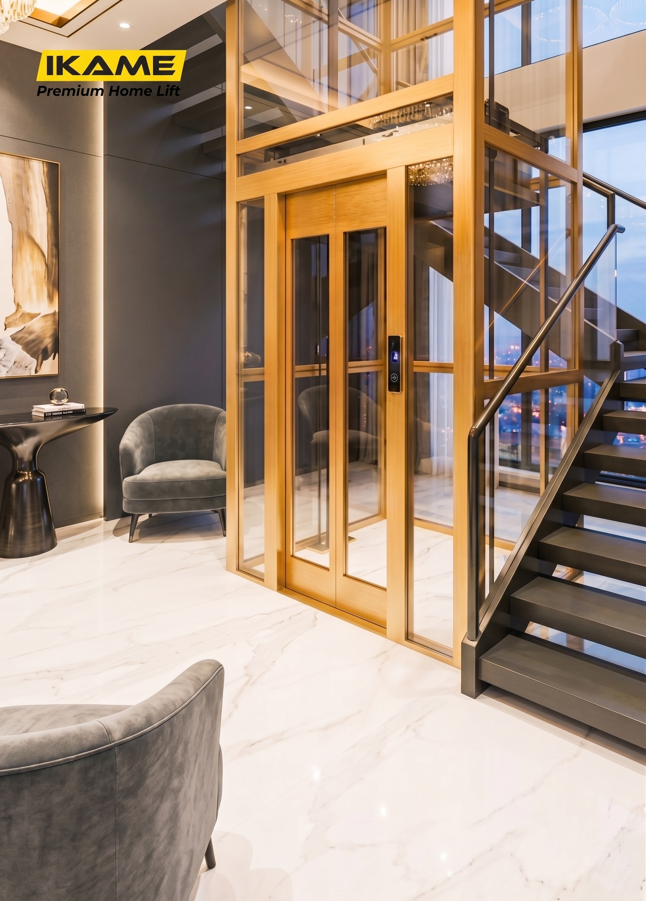

Home lift traksi IKAME mengusung VVVF Drive Technology dengan microcomputer control khusus untuk elevator rumah, menghasilkan pergerakan yang halus dan nyaman. Sistem ini tidak memerlukan ruang mesin tambahan, sehingga menghemat biaya konstruksi dan memaksimalkan ruang bangunan Anda.
Parameter teknis acuan untuk perancangan shaft dan kebutuhan konstruksi hunian Anda.
| Parameter | Deskripsi / Nilai Spesifikasi |
|---|---|
| Tipe Penggerak | Traction / VVVF Drive, gearless permanent magnet synchronous machine |
| Ruang Mesin | Tidak diperlukan (machine room-less) |
| Sumber Listrik | 220V satu phase (rumah tangga umum) |
| Sistem Pintu | Automatic door operator, variable frequency, hemat energi |
| Cadangan Daya | UPS / ARD - evakuasi otomatis saat listrik mati |
| Rangka Well | Struktur baja atau aluminium alloy (opsional) |
| Kapasitas & Tinggi Angkat | Disesuaikan dengan kebutuhan proyek - hubungi tim IKAME |
| Kecepatan Standar | 0,3 M/S (Meter per detik) |
| Tegangan Kontrol | 24 |
| Sistem Pondasi Bawah | Dengan pit (kedalaman 100 mm) atau tanpa pit (ramp miring 100 mm) |
| Sistem Penggerak Sabuk | Penggerak sabuk baja (Steel Belt Drive)td> |
| Lingkungan Pemasangan | Di dalam ruangan (Indoor) |

Dirancang kokoh dan fleksibel untuk berbagai kebutuhan estetika serta arsitektur.
Pilihan varian warna profil rangka, dinding belakang kabin, plafon LED, lantai PVC, serta aksesoris handrail dan handle pintu.
Pilihan warna Matte Black, Luxury Gold, Champagne, Silver, hingga Motif Kayu Alami.

Tekstur laser-etching elegan, Rose Gold Mirror, dan Hairline Stainless Steel tahan gores.

Motif marmer mewah dengan permukaan tahan gores dan mudah dibersihkan.

Plafon modern titanium mirror dengan pencahayaan LED hemat daya yang hangat.

Pilihan pegangan tangan (handrail) dari material stainless steel hingga paduan kayu elegan.

Desain gagang pintu klasik, modern, hingga melingkar dengan finishing premium.

Konsultasikan kebutuhan lantai dan dimensi void tangga Anda bersama sales engineer kami secara gratis.
Hubungi Spesialis Traksi